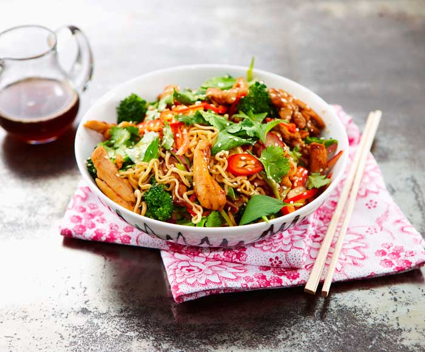
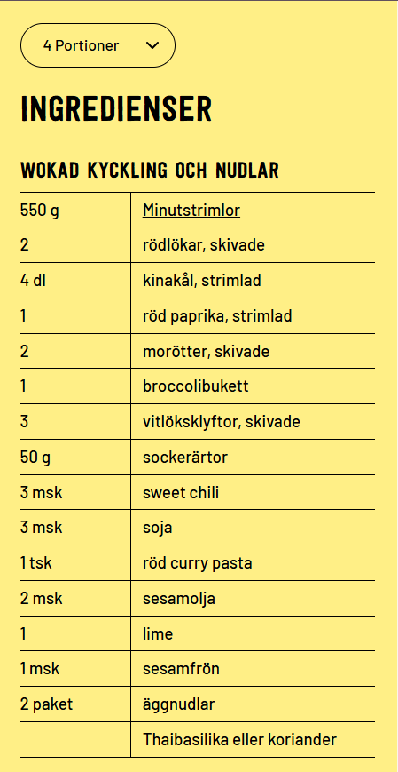

Wok med Kyckling och Nudlar

Smakrik thai-inspirerad nudelwok med kyckling och grönsaksmix. Smaksatt med röd
curry och sojasås.
Steg 1: Förbered nudlar och grönsaker
- Koka nudlarna mjuka i vatten under cirka 2 minuter. Kyl av med isvatten och sila av.
- Dela upp broccolin. Kärna ur paprika och strimla den samt kålen. Skiva vitlöksklyftorna och
morötterna.
- Skiva vitlöksklyftor och morötter. Skär rödlöken (undvik gul lök som substitut). Skär kycklingen
eventuellt i mindre bitar om det behövs.
Steg 2: Woka grönsaker och kyckling
- Hetta upp en wokpanna eller stekpanna. Tillsätt olja och woka kycklingen under 5 minuter (550 g
kyckling till 4 portioner).
- Tillsätt grönsakerna. Börja med broccoli och stek i ca 2 minuter till. Vänd ner lök, paprika och
kinakål. Pressa limejuice över. Avsluta med att tillsätta vitlök. Spara inte på olja, tillsätt mer
om det behövs.

Steg 3: Tillsätt smak
- Tillsätt currypasta. Därefter soja, sweet chili och sesamolja. Stek ytterligare 1 minut och vänd ner
nudlarna.
- Toppa kycklingen med sesamfrön och färska örter istället för salt och peppar. Salt och peppar gör
sig inte rättvisa i det Thailändska köket.